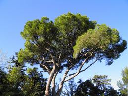

Pin sauf copeaux

Pin sauf copeaux (tous les résineux de la famille des Pinus)
Toxique pour le Korat.
Partie toxique pour les chats en général et le Korat en particulier :
Feuilles.
Symptômes du processus pathologique :
Non décrits. Merci de contacter le Korat Club de France si vous avez des informations à ce sujet : retour d'expérience avec votre Korat ou encore lecture sérieuse théorique par exemple.
Origine de la toxicité (principe actif) :
Toute la plante sauf les copeaux utilisés pour les litières des chats. Par contre si vous avez un rat (bien protégé de votre Korat !), ne pas utiliser de copeaux de résineux pour sa litière.